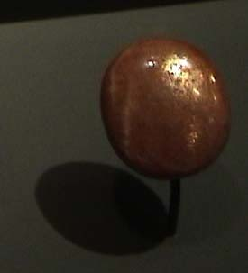

|

| (Na,Ca)(Si,Al)4O8
Oligoclase is a silicate with composition (Na,Ca)(Si,Al)4O8. This 12.6 carat gem is of variety "sunstone" and is from Bjordam Farm, Telemark, Norway. The sample is on display at the Smithsonian Museum of Natural History.
Mindat describes oligoclase as a variety of albite, or a plagioclase feldspar with and albite.
|